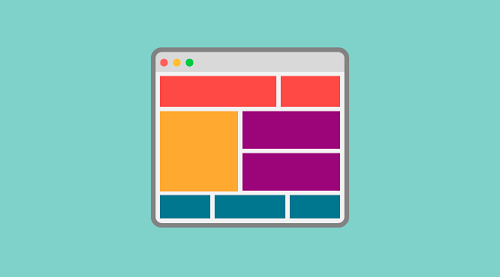

Qué hay de nuevo en CSS Grid?
CSS Grid es un modelo de maquetación CSS en base a una rejilla, algo que podría no parecer tan novedoso, si tenemos en cuenta que diversas librerías de CSS lo habían intentado ya. Sistemas como 960 Grid System fueron pioneros en crear una base de código CSS para que los diseñadores pudieran posicionar los elementos en una distribución de filas y columnas. El propio Bootstrap incluye entre otras cosas un sistema de rejilla. Al final, estos sistemas funcionaron pero tenían varios problemas:
Agregaban peso al CSS, con código de cientos de clases que muchas veces ni siquiera llegabas a usar.
Habia que aplicar constantemente clases y nombre que ensuciaban mucho el HTML.
Creaba código de muy difícil mantenimiento, haciendo que el proyecto estuviera ligado de manera muy directa con un sistema propietario.
Sin embargo, ahora Grid es un estándar y no es necesario recargar ni ensuciar el código para aplicarlo. Todo se aplica directamente desde el CSS, por medio de nuevos atributos, valores y unidades con una variada sintaxis. Además, un sitio con Grid resulta sencillo de mantener y de aplicar otras herramientas de CSS3 como las mediaqueries, y, por supuesto, es totalmente adaptable a los dispositivos (responsive).
Al ser una especificación estable, estándar y soportada por prácticamente todos los navegadores modernos (y si no, siempre podemos utilizar los polyfills) se considera realmente CSS, por lo que se puede utilizar en todos los sitios donde ya se utilice código CSS: sitios estáticos, programación con un lenguaje determinado, un framework o para cualquier tipo de dispositivos (escritorio, móviles, tablets) o webapps.

